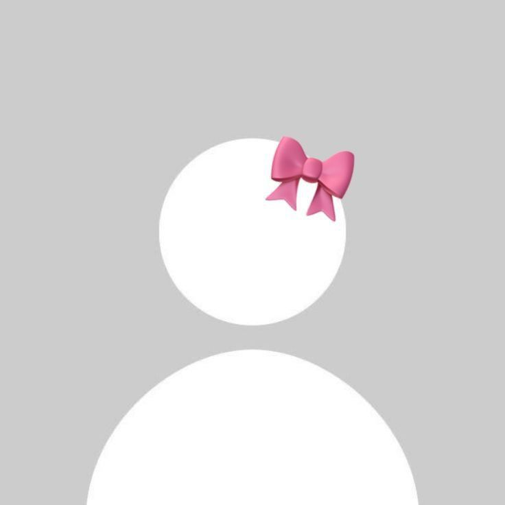

<ion-header>
  <ion-toolbar style="--background: white;">
    <div class="flex items-center justify-between space-x-2 mx-2 p-1">
      <div class="flex space-x-2">
        <i class="fi fi-br-angle-left mt-3" (click)="navigateToChatsList()"></i>
        
        <div>
          <div class="font-semibold text-base">{{ groupName }}</div>
          <div class="text-blue-500 text-xs">{{ groupMembers.length }} membres</div>
        </div>
      </div>
      <ion-buttons slot="end">
        <ion-button fill="clear" size="small">
          <ion-icon name="people-outline"></ion-icon>
        </ion-button>
        <ion-button fill="clear" size="small">
          <ion-icon name="ellipsis-vertical-outline"></ion-icon>
        </ion-button>
      </ion-buttons>
    </div>
  </ion-toolbar>
</ion-header>

<ion-content #chatContent scrollEvents="true" class="relative bg-gray-50">
  <div class="px-4">
    <div class="text-center my-4 text-xs text-gray-400">Aujourd'hui</div>
    <div class="space-y-2 pb-20" *ngIf="groupMembers.length && currentUserId">
      <div *ngFor="let msg of messages">
        <div [ngClass]="msg.from === currentUserId ? 'flex justify-end' : 'flex justify-start'">
          <div class="flex flex-col w-full">
            <div *ngIf="msg.from  !== currentUserId" class="text-xs text-gray-500 mb-1">
              {{ getUserName(msg.from ) }}
            </div>
            <div [ngClass]="msg.sender === 'me' ? 'flex justify-end' : 'flex justify-start'">
              <div [ngClass]="msg.sender === 'me' ? 'bg-blue-500 text-white' : 'bg-white border'"
                class="rounded-xl px-4 py-2 max-w-[70%] text-sm shadow-sm">
                {{ msg.text }}
              </div>
            </div>
          </div>
        </div>
      </div>
    </div>
  </div>
</ion-content>

<ion-footer class="bg-white border-t">
  <div class="flex px-3 py-2 gap-2" [ngClass]="isMultipleLine ? 'items-end' : 'items-center'">
    <ion-button fill="clear">
      <ion-icon slot="icon-only" name="add-outline"></ion-icon>
    </ion-button>

    <div class="flex-1 relative">
      <textarea #chatBox
        [(ngModel)]="newMessage"
        (input)="autoResize($event)"
        rows="1"
        placeholder="Message"
        [ngClass]="isMultipleLine ? 'rounded-lg' : 'rounded-full'"
        class="w-full max-h-32 min-h-[40px] overflow-y-auto resize-none bg-white text-black border px-4 py-2 text-sm focus:outline-none transition-[height] duration-200 ease-in-out"
      ></textarea>
    </div>

    <ng-container *ngIf="!newMessage.trim(); else sendIcon">
      <ion-button fill="clear">
        <ion-icon slot="icon-only" name="mic-outline"></ion-icon>
      </ion-button>
      <ion-button fill="clear">
        <ion-icon slot="icon-only" name="camera-outline"></ion-icon>
      </ion-button>
    </ng-container>

    <ng-template #sendIcon>
      <ion-button fill="clear" (click)="sendMessage()">
        <ion-icon slot="icon-only" name="send-outline"></ion-icon>
      </ion-button>
    </ng-template>
  </div>
</ion-footer>
